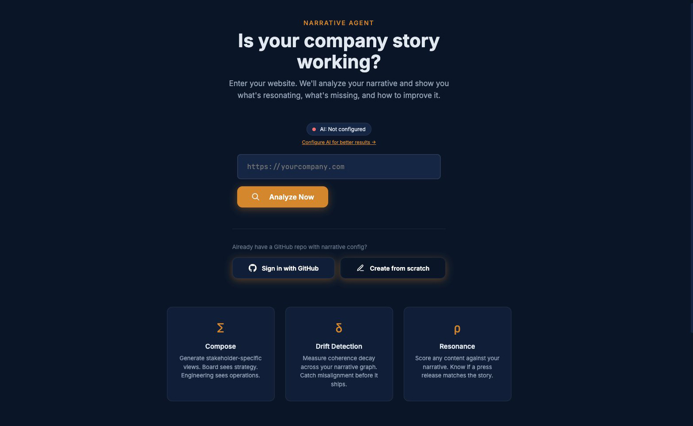
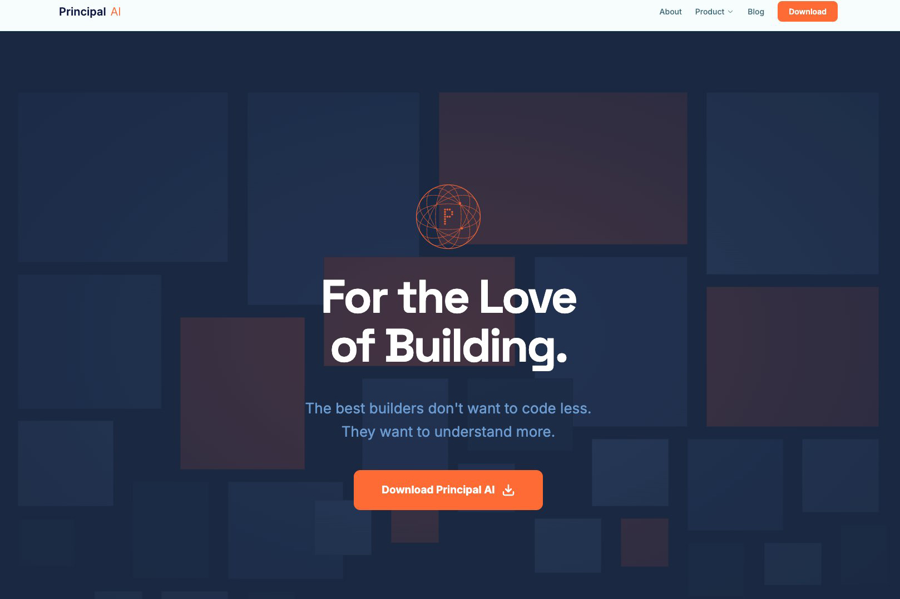
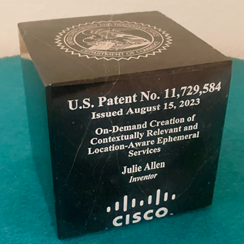

Ready to explore narrative intelligence?
This is a guided audio walkthrough of the Narrative Agent.
🎧 Headphones recommended for the best experience
What if? Why not.
Strategy. Innovation. AI builds. Narrative systems.
The Work
What if narrative had an agent?
+So I built one. A Narrative Agent that reads an organization's full story and tells you what's aligned, what's fragmented, and what's missing. The math underneath is something I call narrative algebra. Provisional patent with the USPTO. The infrastructure under every tool on this page. Still building.

What if you knew for sure agents did what you meant?
+Same question, different medium. Co-founded Principal AI with two technical cofounders. You declare what the code should do. The system runs. The story shows whether it did what you meant. Narrative integrity for software. The work is live.

What if I could turn my storytelling instincts into software?
+Years of corporate storytelling, turned into software one piece at a time. Matter Meter runs how I decide what's worth fighting for. Story Gap Mapper runs how I find what an organization isn't saying. Story Signal runs how I spot a story before it disappears. Three standalone tools in 2025. Looking back, they're the method. The Narrative Agent is what happens when you put them together.
What if I stopped sending résumés?
+Got tired of telling hiring managers who I was. Started showing them, using whatever AI tool had just dropped. October 2024, for a Netflix role: fed my portfolio, résumé, and the job description into NotebookLM. It generated a podcast episode about why I'd fit. Hearing yourself described by an AI that read everything is a different kind of feedback. February 2025, for a Meta role in emerging experiences: built AI Julie, a pre-interview chatbot on Chatbase, trained on my work and steered toward that specific job. Show, don't tell. And use the newest tool in the room to do it.
A conversational AI trained on my portfolio for emerging experiences role
AI-generated podcast analyzing fit from portfolio & job description
0:35 preview
How do you keep 20+ units aligned during the ChatGPT moment?
+Built the messaging framework that kept Cisco coherent through the ChatGPT moment. Twenty business units. Dozens of executives. Hundreds of content touchpoints. The framework shifted the conversation from "what AI is" to "what AI does for people" — and held across a year of nonstop change. The AI Readiness Index and Cisco's public AI narrative hub both launched from this foundation.
What if the app knew where you were?
+Built a location-aware ephemeral services system while at Cisco. A platform that surfaced relevant digital experiences the moment you entered a space — venue chat, curated services, AR experiences — then made them disappear when you left. One of 8 finalists from 400+ submissions in the Cisco Innovate Everywhere Challenge. The idea beat teams of engineers because the question was better than their answers. Now US Patent 11,729,584.

What happens when agency thinking meets global comms?
+Transformed Cisco's communications from corporate broadcasts into campaigns that actually moved people. Built narrative frameworks that turned policy rollouts into stories employees wanted to follow. Created the voice that helped 75,000 people navigate digital transformation, return-to-office, and constant change. The work proved that internal and global audiences deserve the same creative strategy as external ones — and respond when they get it.
Apple. JCPenney. Mattel. Palm.
+Before Cisco, agency life. Helped Apple launch products. Repositioned JCPenney for a new generation. Created campaigns for Mattel toys. Worked on Palm's last big push. Each brand taught me something different about how stories move through culture. The thread that connects them all: finding the question that changes everything.
What's the next question?
Still asking. Still building. Still loving all of it.